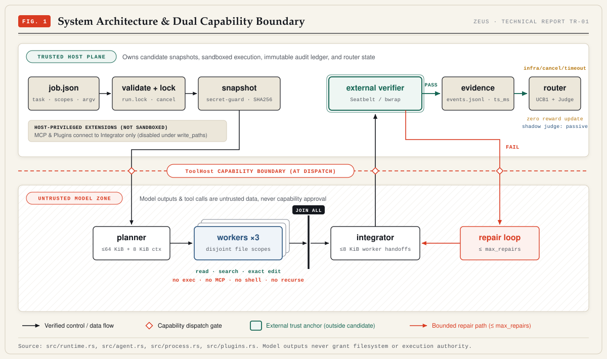

Work-Conserving FIFO vs Synchronous Batch Barriers
Zeus admits workers from a shared FIFO queue up to k <= 3 concurrent
slots. When a task finishes, any idle worker immediately pulls the next task—or halts
new queue admissions immediately if an active task fails while running workers join.
run_tasks)
—
chunks(k))
—
Pre-Admission Write-Scope Validator & Handoff Bounds
Before spawning any parallel worker, Zeus deserializes the untrusted planner JSON and enforces canonical ASCII exact-file paths, user autonomy containment, lowercased disjoint ancestors, and the 8,192-byte context limit.
worker_handoff)
0 / 8,192 UTF-8 B
UCB1 Strategy Bandit & Zeus Judge 8-Gate Sandbox
UCB1 Strategy Router
Direct-first tie-break
Selects mean + sqrt(2 * ln(N) / n) after exploring Direct
then Parallel. Infrastructure faults log zero reward changes.
Zeus Judge (Shadow-Only)
8 Fail-Closed Gates
Evaluates independent linear heads on job_limits_v1 features before
worker launch. Never overrides UCB or explicit strategy.
14 Scrubbed Exploratory Trials (Qwen 3.5-9B)
Extracted by research/scripts/extract_field_runs.py into
research/data/field_runs.json. Notice
every transport and planner-format error (T01–T02, T05, T07–T11, T14)
recorded reward_recorded = false, leaving UCB1 weights uncorrupted.
| Trial | Campaign | Strategy | Status | Wall Time | Verifier Checks | Failure Class | Fix Commit | UCB Reward |
|---|
No exploratory trials match the selected filter combination.
Generated Vector Plates (Verified via build_figures.py --check)

